『星が降る夜のピアニスト』
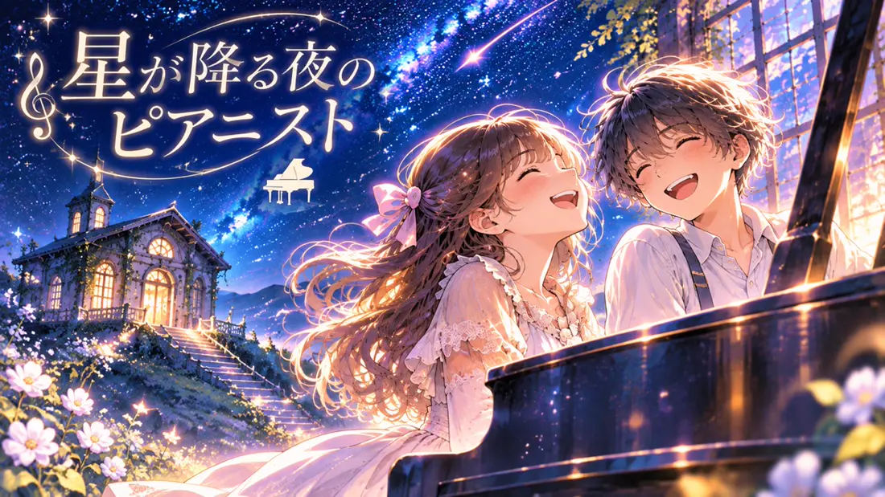
この街には、古くから不思議な言い伝えがある。
星が流れる夜、丘の上の古い音楽堂から、ピアノの音が聞こえてくることがあるという。
その音色を聴いた人は、忘れていた大切な何かを思い出す。
けれど、誰が弾いているのかを知る人はいない。
なぜなら、その音楽堂は、もう何十年も使われていないからだ。
丘のふもとに、ひとりの少女が暮らしていた。
少女は、ピアノが大好きだった。
小さい頃は、母と並んで毎日のように弾いていた。
母が右手を弾き、少女が左手を弾く。
ときどき間違えて、二人で大笑いした。
「もう！ お母さんが間違えたんでしょ！」
「違うわよ。あなたが急ぐから！」
そんな時間が、少女は大好きだった。
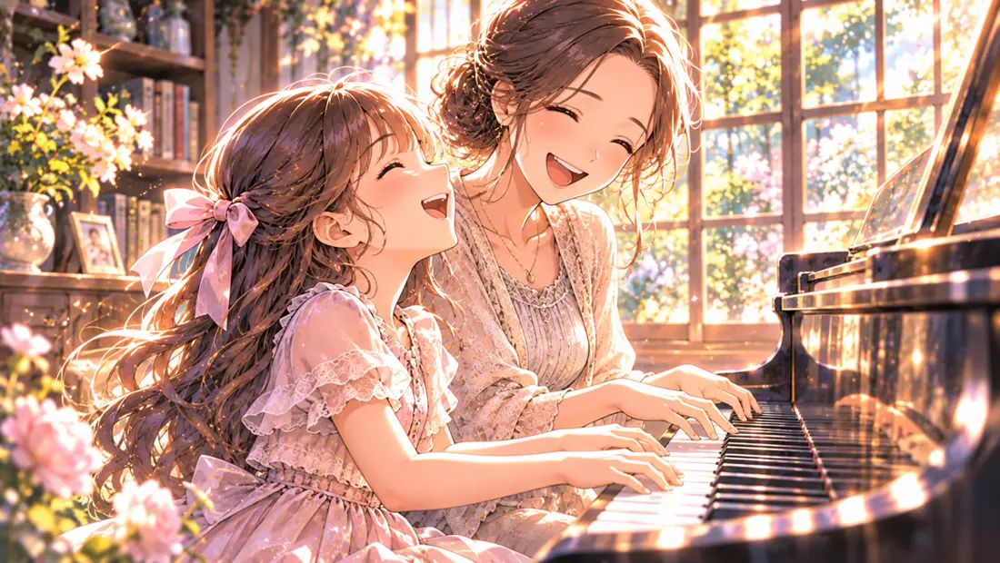
けれど、母が亡くなった日から、少女はピアノを弾かなくなった。
鍵盤に触れると、母の声が聞こえてくる気がした。
隣を見ると、誰もいない。
それが、たまらなく悲しかった。
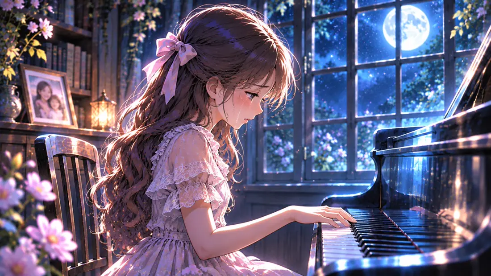
少女は、いつしか笑うことも少なくなっていた。
そんなある夜のこと。
丘の上から、ピアノの音が聞こえてきた。
ポロン。
ポロン、ポロ……ジャン！
「……え？」
少女は思わず足を止めた。
なんともひどい演奏だった。
同じところで何度も間違え、途中で止まり、また最初から弾き直している。
「もう！ そこは違うってば！」
思わず声が出た。
すると、音がぴたりと止まった。
少女は慌てて口を押さえた。
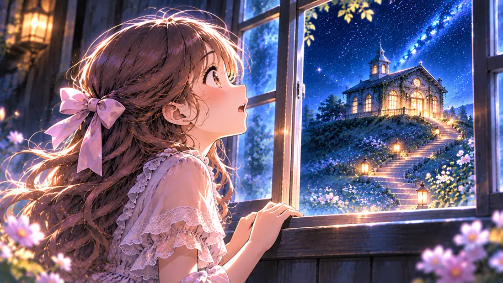
誰もいないはずの音楽堂。
気になって、そっと扉を開けた。
そこには、一人の少年がいた。
古びたグランドピアノの前に座り、難しい顔をして鍵盤をにらんでいる。
「……誰？」
少年が振り向いた。
「あ！ よかった！ ちょうどいいところに来た！」
「え？」
「君、ピアノ弾ける？」
「……昔は」
「じゃあ、ここ教えて！」
少年は楽譜を指さした。
「どうしても、この先が弾けないんだ」
少女は首を振った。
「もう弾かないの」
「どうして？」
「……弾きたくないから」
少年は少し考えてから言った。
「そっか。じゃあ、聴いてて！」
そして、また弾き始めた。
ポロン、ポロン、ポロ……ジャン！
「だから！ そこ違うってば！」
「ええ！？ また！？」
少年が大げさに頭を抱えた。
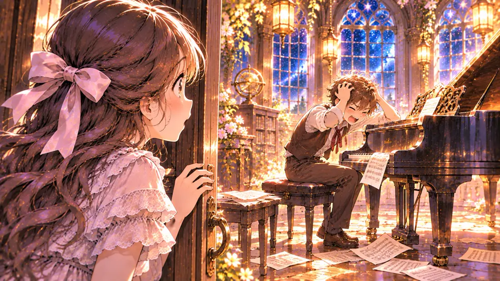
その姿がおかしくて、少女は思わず吹き出した。
「ふふっ……あはは！」
少年は、ぽかんと少女を見つめた。
そして、嬉しそうに笑った。
「……やっと笑った」
「え？」
「ううん！ なんでもない！」

それから少女は、毎晩のように音楽堂へ通うようになった。
最初は、少年のあまりにもひどい演奏が気になっただけだった。
けれど、いつしか二人で過ごす時間が楽しみになっていた。
少年は、とにかくおしゃべりだった。
「ねえ、雲って食べられると思う？」
「食べられないでしょ」
「でも綿あめに似てるじゃん！」
「じゃあ、食べてみたら？」
「高いところ苦手なんだよねえ」
「なんなのよ！」
少女は笑った。
少年も笑った。
ピアノを弾いて、くだらない話をして、またピアノを弾く。
そんな毎日だった。

ある日、少女は尋ねた。
「ねえ、どうしてそんなに一生懸命練習してるの？」
少年は鍵盤に指を置いたまま答えた。
「ある人に、聴いてほしいんだ」
「誰？」
「内緒！」
「好きな人？」
「うーん……大切な人、かな」
「ふうん」
少女は少しだけ、胸の奥が温かくなった。
誰かのために、一生懸命になれる。
それは、なんだか素敵なことだと思った。
「その人、喜んでくれるといいね」
少年は少女を見つめた。
「うん。きっとね」
季節が変わった。
音楽堂へ続く坂道に、落ち葉が舞うようになった。

少年は相変わらず、同じ服を着ていた。
少女がそれをからかうと、少年は笑って答えた。
「これ、お気に入りなんだ！」
そういえば、少年が音楽堂の外にいるところを見たことがない。
「ねえ、たまには外で遊ばない？」
少女が誘うと、少年は窓の外を見つめた。
「僕は、ここが好きなんだ」
「変なの」
「そうかな？」
少年は笑った。
少女は、それ以上聞かなかった。
誰にだって、好きな場所はある。
自分にとっても、いつの間にか、この音楽堂がそうなっていた。
ある晩。
少女は、母とよく弾いていた曲を、久しぶりに弾いてみた。
最初は、指が震えた。
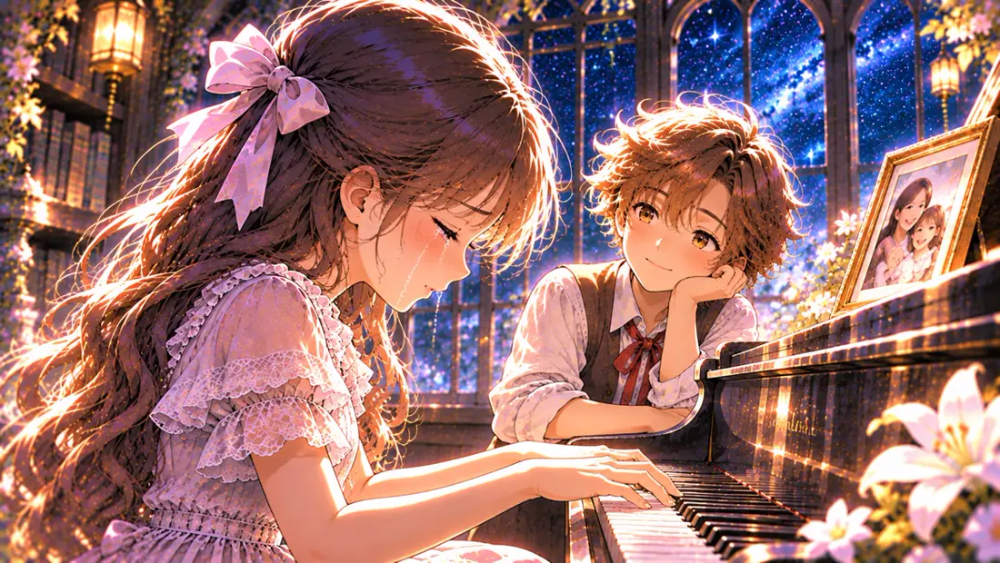
何度も止まりそうになった。
それでも、少年は何も言わずに聴いていた。
曲が終わると、少女の頬を涙が伝った。
「……お母さんと、よく弾いてたの」
少年は静かにうなずいた。
「お母さん、私が間違えると、いつも笑ってた」
「うん」
「私も笑って……楽しかったの」
「うん」
「でも、もう……一緒に弾けない」
少年は、しばらく黙っていた。
そして、ぽつりと言った。
「ねえ。お母さんと弾いてたとき、君は幸せだった？」
少女はうなずいた。
「……うん」
「じゃあ、今度は君が、誰かを幸せにしてあげたら？」
少女は顔を上げた。
「私が？」
「うん。君のピアノ、僕は好きだよ」
少年は照れくさそうに笑った。
「それに、君が笑うと、なんだかここが明るくなるんだ」
少女は涙を拭った。
「……変なこと言うね」
「よく言われる！」
二人は笑った。
それから、少女は少しずつ変わっていった。
学校でも、友達と笑うようになった。
近所のおばあさんに、自分から挨拶するようになった。
そして、母と弾いていたピアノにも、また触れられるようになった。
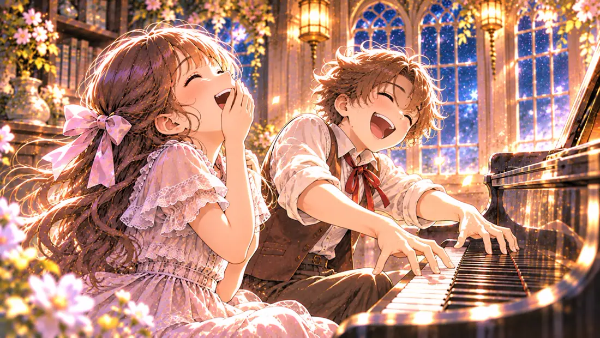
少年は、その話を聞くたびに嬉しそうだった。
「今日は何回笑った？」
「そんなの数えてないよ！」
「じゃあ、明日は十回ね！」
「無理！」
「じゃあ、百回！」
「増えてるじゃん！」
少女は声を上げて笑った。
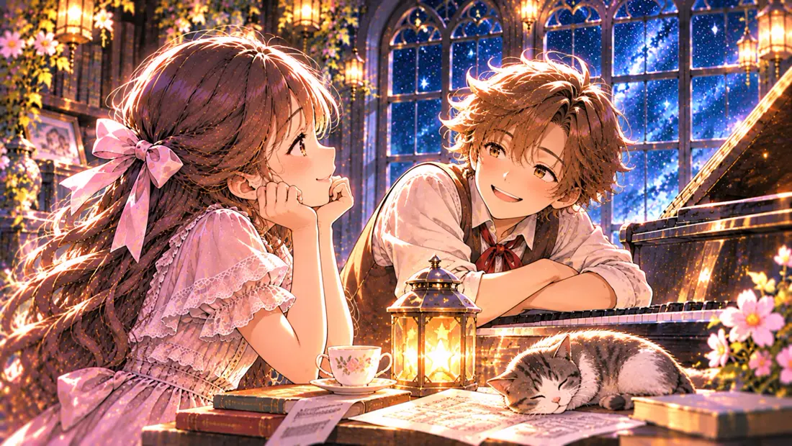
少年も笑った。
けれど、その笑顔の奥に、ときどき寂しそうな影が浮かぶことを、少女はまだ知らなかった。
冬の始まり。
星がひときわ美しく輝く夜だった。
少女が音楽堂に入ると、少年はいつものようにピアノの前に座っていた。
「ねえ！ 聴いて！」
少年は、あの曲を弾き始めた。
初めて出会った夜、何度も間違えていた曲。
けれど、その夜は違った。
ひとつも間違えずに、最後まで弾ききった。
少女は大きな拍手を送った。
「すごい！ やっと弾けたじゃん！」
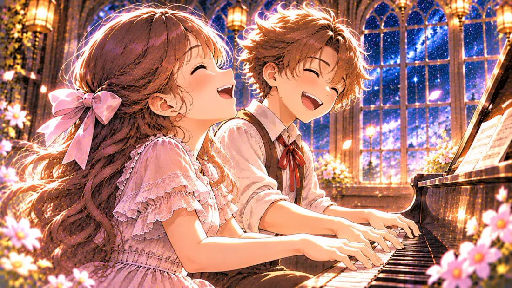
少年は、嬉しそうに笑った。
「うん。やっと……」
その声は、少し震えていた。
「ねえ、今日は君に話したいことがあるんだ」
「なあに？」
少年は、ゆっくりと少女を見つめた。
「僕ね、ずっと昔、ある人と約束したんだ」
「約束？」
「うん。その人には、とっても大切な女の子がいたんだって」
少女は黙って聞いていた。
「その女の子はね、笑うと周りのみんなが幸せになるんだって」
少年は、懐かしそうに目を細めた。
「でも、その人は、いつか女の子のそばにいられなくなることを知っていたんだ」
少女の胸が、どくんと鳴った。
「だから、僕に頼んだんだよ」
少年は、少女の目をまっすぐ見つめた。
「もし、あの子がここに来ることがあったら、伝えてほしいって」
「……誰のこと？」
少年は、優しく笑った。
「君のお母さんだよ」
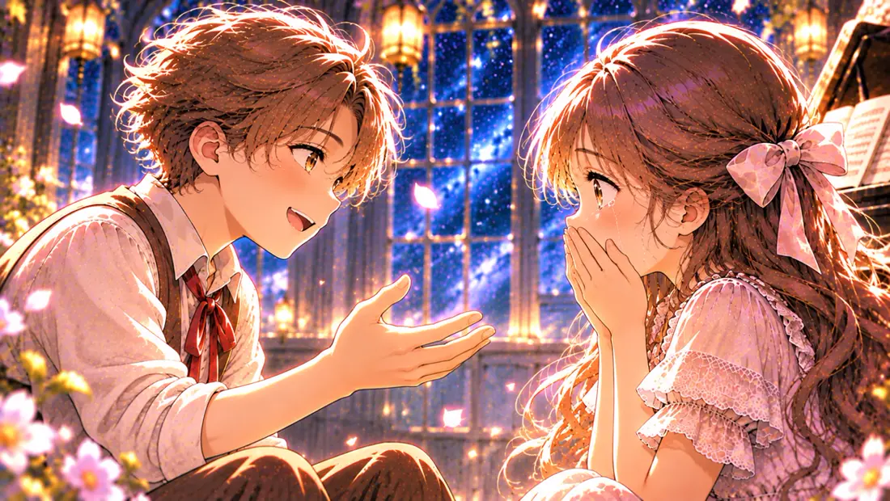
少女は息をのんだ。
「……え？」
「ずっと前にね、ここで君の話をしてくれたんだ」
少年は、ゆっくりと言葉を続けた。
「君がどんなにピアノが好きだったか。どんなに笑う子だったか。君が笑うと、自分まで幸せになるんだって」
少女の目に、涙があふれた。
少年は、母親から預かった言葉を、一言ずつ大切に伝えた。
「あなたの笑顔は、みんなを幸せにするの」
「だから、忘れないで」
「私の大切な人」
「大好きよ」
「ずっと、見守っているわ」
少女は、両手で顔を覆った。
「……お母さん……」
涙が、次から次へとこぼれ落ちた。
少年は、しばらく何も言わずに待っていた。
そして、静かに言った。
「やっと、伝えられた」
少女は顔を上げた。
少年は、ほっとしたように笑っていた。
「もう何年も待ったんだよ」
「……え？」
「君が、ここに来てくれるのを」
少年は少しだけ肩をすくめた。
「僕も、ちょっと疲れちゃった」
そのときだった。
少年の指先から、小さな光がこぼれ始めた。
「……なに、それ？」
少女が立ち上がった。
光は、少年の手から腕へ、そして肩へと広がっていく。
「ねえ……どうしたの？」
少年は、いつものように笑っていた。
「僕ね、ずっと君の笑顔が見たかったんだ」
「やだ……待って……」
「ほら、笑って」
少女の涙が、ぽろぽろと落ちた。
「君の笑顔を見せて」
「どこ行くの……？」
少女は少年に手を伸ばした。
「待ってよ！」
少年は、少し困ったように笑った。
「そんな顔しないでよ。せっかく、笑えるようになったんだから」
少女は、涙を拭った。
何度も、何度も。
そして、精いっぱいの笑顔を作った。
「……待たせてごめんね」
声が震えた。
「ありがとう……！」
少年は、その笑顔を見つめた。
本当に、幸せそうに。
「……うん」
その瞬間。
まばゆい光が、音楽堂いっぱいに広がった。
少年の姿が、無数の光の粒になっていく。
「ありがとう」
最後に、そんな声が聞こえた気がした。
そして少年は、星のかけらのように、静かに消えていった。
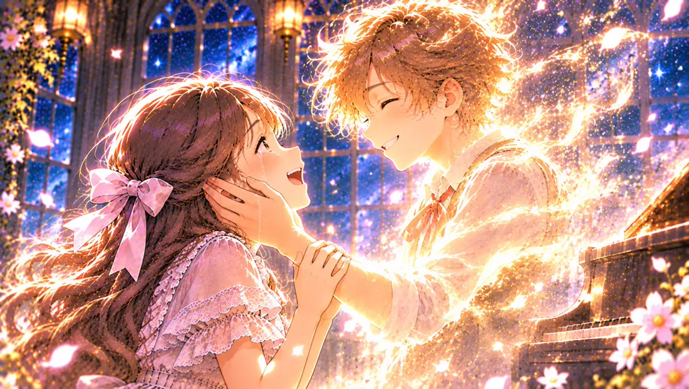
少女が駆け寄ったとき、そこにはもう誰もいなかった。
ただ、ピアノの鍵盤が、月の光を受けて白く輝いていた。
それから、いくつもの季節が過ぎた。
少女は、あの少年との約束を忘れなかった。
もちろん、悲しい日もあった。
泣きたくなる夜もあった。
それでも、少女はよく笑った。
不思議なことに、少女が笑うと、周りにも小さな幸せが生まれた。
電車の中で泣いていた赤ちゃんが、少女の顔を見て、ぴたりと泣き止んだ。
困り果てていた母親も、つられて笑った。
道端で転んだ男の子に手を差し伸べると、男の子は涙を拭いて笑った。
花屋のおばあさんは、少女が訪れるたびに言った。
「あなたが来ると、なんだかお店が明るくなるねえ」
少女は、そのたびに思った。
お母さん。
あなたの言っていたこと、本当だったよ。
私が笑うと、誰かが笑ってくれる。
そして、誰かが笑ってくれると、私も幸せになるんだね。
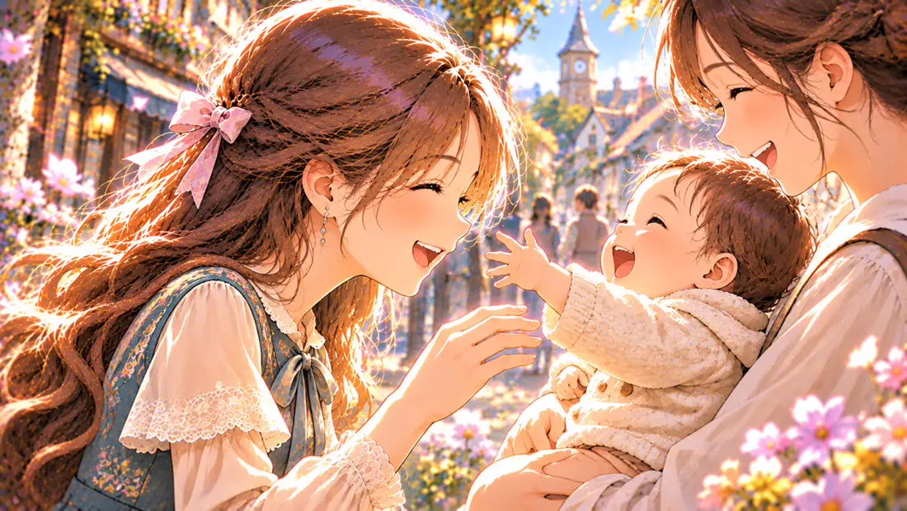
少女は大きくなっても、ピアノを弾き続けた。
母と弾いた曲も。
少年と何度も練習した曲も。
どちらも、少女にとって大切な宝物だった。
ある夜。
少女は久しぶりに、あの音楽堂を訪れた。
扉を開けると、懐かしい木の匂いがした。
あの日と変わらないグランドピアノ。
少年がいつも座っていた椅子。
少女はそっと鍵盤に触れた。
ポロン。
懐かしい音が響いた。
そして、少年と何度も練習した曲を弾き始めた。
あの頃は、何度も間違えた曲。
今では、目を閉じても弾ける。
最後の一音が、静かな音楽堂に溶けていった。
少女は、誰もいない隣の椅子を見つめた。
「ねえ、聞こえてる？」
返事はなかった。
「私ね、今日も笑ったよ」
少女は小さく微笑んだ。
「約束、守ってるよ」
少しだけ、声が震えた。
「だから……」
言葉が続かなかった。
「だから……会いたい……」
ぽたり。
鍵盤に、一粒の涙が落ちた。
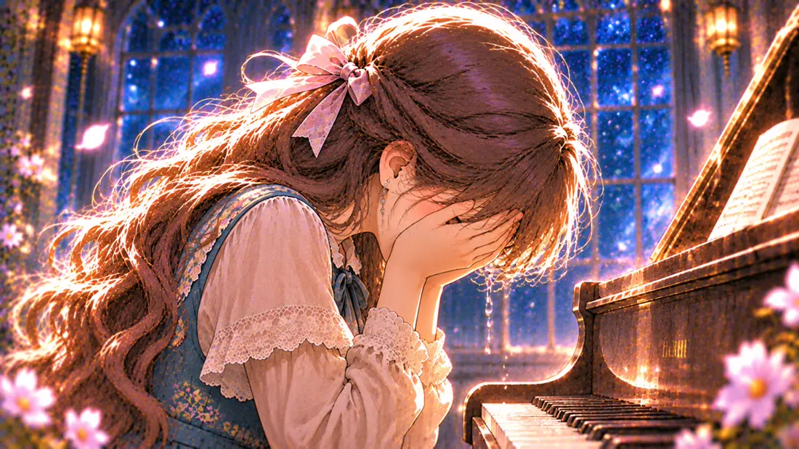
少女はうつむいたまま、肩を震わせた。
そのときだった。
背後の窓が、ふわりと開いた。
暖かな風が、静かな音楽堂に吹き込んできた。
少女の髪を揺らし、頬をなで、震える肩をそっと包み込む。
まるで、誰かが後ろから優しく抱きしめてくれているようだった。
少女は、ゆっくりと顔を上げた。
そして、涙を拭いながら、小さく笑った。
「ふふっ。ありがとう。もう大丈夫！」
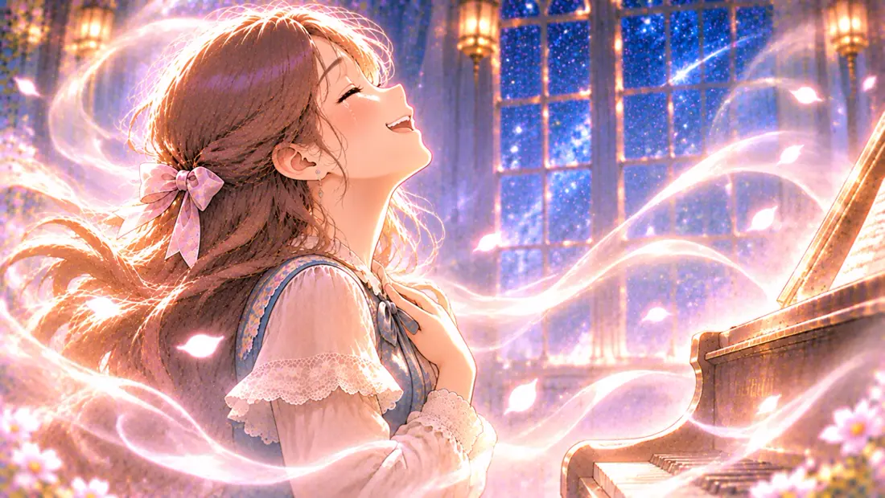
窓の外で、星がひとつ流れた。
あの夜、星になった少年は、まだ知らない。
自分が守った、たったひとつの笑顔が、
今日もこの街に、いくつもの幸せを咲かせていることを。
最後まで読んでくださって、ありがとうございます🌸
あなたの心にも、小さな何かが残っていたら嬉しいです。
また次回も、少しずつ物語を届けますね。